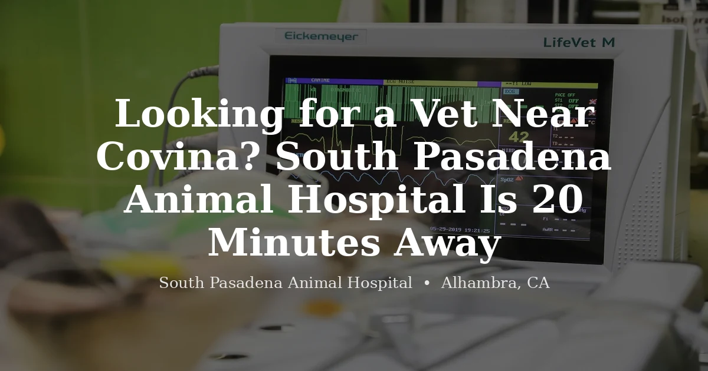

June 16, 2026 · 6 min read
Looking for a Vet Near Covina? South Pasadena Animal Hospital Is 20 Minutes Away

If you've been searching for a vet near Covina and running into closed waitlists, you're not alone. Finding a practice that's actually taking new patients — especially for dogs and cats, not just existing clients — has been genuinely difficult in the eastern San Gabriel Valley over the past few years. We hear this from clients who drive to see us regularly.
Here's the good news: South Pasadena Animal Hospital in Alhambra is now accepting new clients, including dogs, cats, and exotic animals. And from Covina, we're about 20 minutes down the freeway.
Getting Here from Covina
The drive is easy and mostly freeway. From central Covina:
- Head to the I-10 West on-ramp
- Drive approximately 10–11 miles west toward Los Angeles
- Exit at Fremont Avenue in Alhambra
- Head south on Fremont Avenue
- Turn right on W Main Street
- We're at 3116 W Main St, Alhambra, CA 91801
Total drive time: around 20 minutes in normal traffic. From West Covina, you're slightly closer — more like 15–17 minutes. It's about the same commute as driving across most parts of the San Gabriel Valley to any other vet, and considerably less than heading into Pasadena or toward LA.
What We Offer Covina Pet Owners
We're a full-service veterinary practice seeing dogs, cats, and a wide range of exotic animals at our Alhambra location. For dogs and cats, our services include:
- Wellness exams and preventive care
- Vaccinations
- Spay and neuter surgery
- Dental cleanings under anesthesia
- Diagnostics — bloodwork, urinalysis, radiographs
- Sick visits and treatment for illness and injury
- Senior pet care
We're appointment-based — no walk-ins. That means when you arrive, you'll be seen on time without sitting in a waiting room for two hours. It's a deliberately different experience than an urgent care or emergency clinic environment.
A Note on Exotic Pets Near Covina
If you have a rabbit, guinea pig, bird, reptile, ferret, chinchilla, or other small exotic animal, the situation near Covina is genuinely difficult. The eastern San Gabriel Valley has very few veterinarians who see exotic species with any regularity. Most general practice vets will tell you directly that you need to go elsewhere for rabbit or bird care.
We fill that gap. At South Pasadena Animal Hospital, we see exotic animals as a core part of our practice — not as occasional appointments squeezed in between dog and cat visits. Covina and West Covina pet owners with rabbits, birds, and reptiles have been making the drive to us for exactly this reason.
Common exotic visits we see from the eastern SGV include:
- Rabbit wellness exams, GI stasis, dental issues, and spays
- Guinea pig dental disease and respiratory infections
- Parrot and bird wellness, feather issues, and illness workups
- Bearded dragon and leopard gecko health concerns
- Ferret wellness and adrenal/insulinoma management
Why Covina Pet Owners Drive to Us
Availability, honestly. Many local practices in the eastern SGV are at capacity for new clients. We're not.
We're also genuinely set up for both dogs and cats and exotic animals — which means Covina families with a mix of pets (a dog and a rabbit, or a cat and a bird) can bring everyone to the same clinic. That matters more than it might sound when you're coordinating multiple appointments.
Appointment-based care means a different experience too. You'll see a veterinarian, not spend your visit sitting in a waiting area while time slots run over. We keep our schedule manageable on purpose.
What to Expect at Your First Visit
Your first visit is a new client exam — a thorough look at your pet, a review of their health history (bring any prior records you have, or we'll start fresh if you don't), and a conversation about their care going forward.
A few practical notes:
- Dogs: Please keep on a leash in the parking lot and reception area
- Cats: We recommend a secure carrier — it's genuinely less stressful for them
- Exotic animals: A secure carrier appropriate for your animal's size is ideal; avoid loose or open containers
- Records: Bring vaccination history and any prior vet records if available
- Medications: Bring a list of any current medications, supplements, or special diet your pet is on
You can book online or call us. Either way works. We'll confirm your appointment and send a reminder before your visit.
For a full list of what we offer, visit our Alhambra vet page or our services page. Have an exotic animal? See our exotic vet page for more detail on what we handle.
We know 20 minutes feels like a commitment when there's a vet closer to home. But if that closer vet isn't taking new patients, it doesn't help you much. We are — and we'd be glad to take care of your pet.
Frequently Asked Questions
Is South Pasadena Animal Hospital accepting new clients from Covina?
Yes — we're now accepting new clients from Covina, West Covina, and the surrounding eastern San Gabriel Valley, including dogs, cats, and exotic animals. Call (626) 441-1314 or book online to schedule your first appointment.
How do I get to South Pasadena Animal Hospital from Covina?
From Covina, take the I-10 West for approximately 10–11 miles. Exit at Fremont Avenue in Alhambra, head south, then turn right on W Main Street. We're at 3116 W Main St, Alhambra, CA 91801. The drive is typically around 20 minutes in normal traffic. From West Covina, the distance is slightly shorter.
Do you see exotic pets from Covina?
Yes. We see rabbits, guinea pigs, birds, chinchillas, ferrets, hedgehogs, reptiles, and other exotic animals from across the San Gabriel Valley, including Covina and West Covina. There are very few exotic-capable veterinary practices in the eastern SGV, so Covina-area exotic pet owners frequently make the drive to Alhambra for care.
What should I bring to my first appointment at SPAH?
Bring any prior veterinary records, vaccination history, and current medications your pet is taking. If your pet is new to you and you don't have records, that's fine — we'll start fresh. Arrive a few minutes early for your first visit to complete new client paperwork. Keep dogs on a leash and cats in a carrier.
What services do you offer for dogs and cats from Covina?
We offer wellness exams, vaccinations, spay and neuter surgery, dental cleanings, diagnostics (bloodwork and radiographs), and treatment for illness and injury for dogs and cats. Visit our services page for a full list of what we offer.
Do you have parking at your Alhambra location?
Yes, there is parking available at our Alhambra location at 3116 W Main St. Call us if you have any questions about finding us: (626) 441-1314.